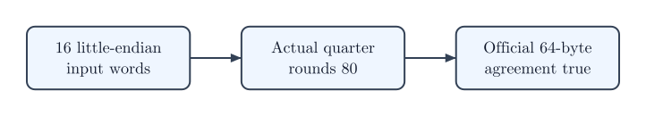
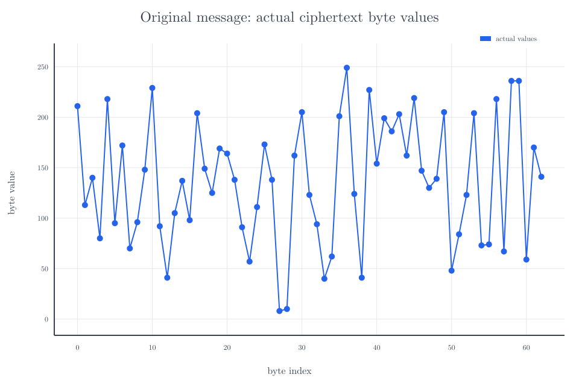
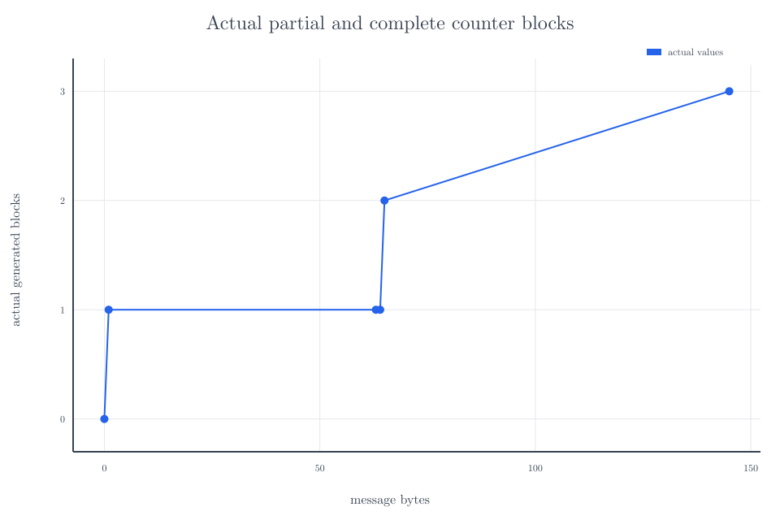
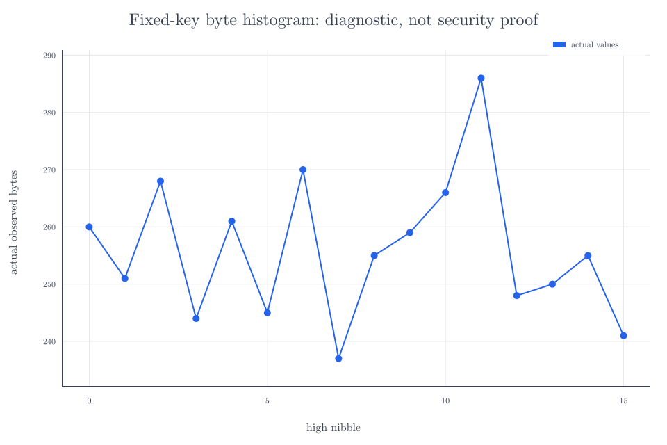

Salsa20/20: actual ARX rounds, official core vector and stream blocks
Abstract
Turn a key, nonce and counter into a byte stream, then XOR it with a message. Actual quarter-round records connect addition, rotation and XOR to the official core vector before the original message round trip.
Mechanism and mathematical scope
Each quarter round updates four 32-bit words with addition modulo 2^32, XOR and rotations 7,9,13,18. Ten column/row double rounds are followed by addition of the original sixteen-word state and little-endian serialization. For block j, use counter+j; C_i=P_i XOR K_i, so applying the same stream twice recovers P. This identity proves round-trip behavior, not security. The original plaintext contains fewer than 64 bytes despite its wording; its actual block count is measured below. A separate 145-byte binary control exercises three blocks. This API is the bare cipher, with no authentication or message-format protocol.
A tiny actual producing history
The table and native concept diagram read the same producing execution. Every block below is a complete editable C++ program.
#include <dm/dm.hpp>
int main() {
namespace a = dm::algorithms;
namespace g = dm::graphics;
std::filesystem::create_directories("build");
auto e = a::salsa20_example();
auto r = a::salsa20_core_trace(e.input);
const auto &q = r.quarters[0];
std::print("Actual first quartet indices `{}`; before `{}`; after `{}`.\nActual core vector agrees with " "all 64 official bytes: {}.\n",
q.indices, q.before, q.after, r.bytes == e.expected);
if (r.bytes != e.expected)
return 1;
g::Diagram concept_diagram(48, 1100);
concept_diagram.node("n0", {0, 0}, "16 little-endian input words");
concept_diagram.node("n1", {5, 0},
std::format("Actual quarter rounds {}",
r.quarters.size()));
concept_diagram.node("n2", {10, 0},
std::format("Official 64-byte agreement {}",
r.bytes == e.expected));
concept_diagram.edge("n0", "n1").edge("n1", "n2");
concept_diagram.save_svg("build/salsa20_tiny.svg");
}Actual first quartet indices [0, 4, 8, 12]; before [1930272723, 817098033, 1059123231, 1340852559]; after [3990793, 1275558992, 353941345, 1235084651].
Actual core vector agrees with all 64 official bytes: true.

The retained original experiment
#include <dm/dm.hpp>
int main() {
namespace a = dm::algorithms;
namespace g = dm::graphics;
std::filesystem::create_directories("build");
auto e = a::salsa20_example();
auto r = a::salsa20_stream_trace(e.key, 0, e.nonce, e.plaintext);
auto recovered = a::salsa20_encrypt(e.key, 0, e.nonce, r.output);
std::print("Original message: {}\n\nActual bytes {}, blocks {}, byte XORs {}, round-trip {}.\n\n| byte " "index | actual ciphertext byte |\n| ---: | ---: |\n",
e.plaintext, r.output.size(), r.block_calls, r.byte_xors,
recovered == e.plaintext);
std::vector<double> x, y;
for (std::size_t i = 0; i < r.output.size(); ++i) {
auto v = static_cast<unsigned char>(r.output[i]);
std::print("| {} | {} |\n", i, unsigned(v));
x.push_back(i);
y.push_back(v);
}
if (recovered != e.plaintext)
return 1;
auto plot = g::RPlot::create();
plot.lines(x, y, "actual values", {37, 99, 235}).points(x, y, {37, 99, 235},
5).title(
"Original message: actual ciphertext byte values").x_label("byte index").y_label("byte value");
plot.save_svg("build/salsa20_original.svg");
}Original message: Salsa20 stream cipher round-trip over multiple 64-byte blocks!!
Actual bytes 63, blocks 1, byte XORs 63, round-trip true.
| byte index | actual ciphertext byte |
|---|---|
| 0 | 211 |
| 1 | 113 |
| 2 | 140 |
| 3 | 80 |
| 4 | 218 |
| 5 | 95 |
| 6 | 172 |
| 7 | 70 |
| 8 | 96 |
| 9 | 148 |
| 10 | 229 |
| 11 | 92 |
| 12 | 41 |
| 13 | 105 |
| 14 | 137 |
| 15 | 98 |
| 16 | 204 |
| 17 | 149 |
| 18 | 125 |
| 19 | 169 |
| 20 | 164 |
| 21 | 138 |
| 22 | 91 |
| 23 | 57 |
| 24 | 111 |
| 25 | 173 |
| 26 | 138 |
| 27 | 8 |
| 28 | 10 |
| 29 | 162 |
| 30 | 205 |
| 31 | 123 |
| 32 | 94 |
| 33 | 40 |
| 34 | 62 |
| 35 | 201 |
| 36 | 249 |
| 37 | 124 |
| 38 | 41 |
| 39 | 227 |
| 40 | 154 |
| 41 | 199 |
| 42 | 186 |
| 43 | 203 |
| 44 | 162 |
| 45 | 219 |
| 46 | 147 |
| 47 | 130 |
| 48 | 139 |
| 49 | 205 |
| 50 | 48 |
| 51 | 84 |
| 52 | 123 |
| 53 | 204 |
| 54 | 73 |
| 55 | 74 |
| 56 | 218 |
| 57 | 67 |
| 58 | 236 |
| 59 | 236 |
| 60 | 59 |
| 61 | 170 |
| 62 | 141 |

Explicit controls
#include <dm/dm.hpp>
int main() {
namespace a = dm::algorithms;
namespace g = dm::graphics;
std::filesystem::create_directories("build");
auto e = a::salsa20_example();
std::vector<double> x, y;
std::print("| raw binary length | actual blocks | actual XORs | round-trip |\n| ---: | ---: | ---: | " "--- |\n");
for (std::size_t n : {0, 1, 63, 64, 65, 145}) {
std::string data(n, char{0});
auto r = a::salsa20_stream_trace(e.key, 3, e.nonce, data);
auto recovered = a::salsa20_encrypt(e.key, 3, e.nonce, r.output);
std::print("| {} | {} | {} | {} |\n", n, r.block_calls, r.byte_xors,
recovered == data);
x.push_back(n);
y.push_back(r.block_calls);
}
bool wrap = false;
try {
a::salsa20_stream_run(e.key, std::numeric_limits<std::uint64_t>::max(),
e.nonce, std::string(65, char{0}));
} catch (const std::overflow_error &) {
wrap = true;
}
std::print("Counter wrap rejected {}.\n", wrap);
if (!wrap)
return 1;
auto plot = g::RPlot::create();
plot.lines(x, y, "actual values", {37, 99, 235}).points(x, y, {37, 99, 235},
5).title(
"Actual partial and complete counter blocks").x_label("message bytes").y_label("actual generated blocks");
plot.save_svg("build/salsa20_controls.svg");
}| raw binary length | actual blocks | actual XORs | round-trip |
|---|---|---|---|
| 0 | 0 | 0 | true |
| 1 | 1 | 1 | true |
| 63 | 1 | 63 | true |
| 64 | 1 | 64 | true |
| 65 | 2 | 65 | true |
| 145 | 3 | 145 | true |
Counter wrap rejected true.

Actual selected work and sensitivity
#include <dm/dm.hpp>
int main() {
namespace a = dm::algorithms;
namespace g = dm::graphics;
std::filesystem::create_directories("build");
auto e = a::salsa20_example();
auto r = a::salsa20_byte_study(e.key, e.nonce);
std::vector<double> x, y;
std::print("Actual generated blocks {}, bytes {}.\n\n| high nibble | actual byte count |\n| ---: | ---: " "|\n",
r.blocks, r.bytes);
for (std::size_t i = 0; i < r.groups.size(); ++i) {
std::print("| {} | {} |\n", i, r.groups[i]);
x.push_back(i);
y.push_back(r.groups[i]);
}
auto plot = g::RPlot::create();
plot.lines(x, y, "actual values", {37, 99, 235}).points(x, y, {37, 99, 235},
5).title(
"Fixed-key byte histogram: diagnostic, not security proof").x_label(
"high nibble").y_label("actual observed bytes");
plot.save_svg("build/salsa20_work.svg");
}Actual generated blocks 64, bytes 4096.
| high nibble | actual byte count |
|---|---|
| 0 | 260 |
| 1 | 251 |
| 2 | 268 |
| 3 | 244 |
| 4 | 261 |
| 5 | 245 |
| 6 | 270 |
| 7 | 237 |
| 8 | 255 |
| 9 | 259 |
| 10 | 266 |
| 11 | 286 |
| 12 | 248 |
| 13 | 250 |
| 14 | 255 |
| 15 | 241 |

API and interpretation
The official vector checks every byte. Histogram shape and round trips do not demonstrate cryptographic security. Native stream admission checks the complete byte count, retained block geometry and final counter before execution. A final partial block retains all its actual keystream bytes.
Reusable producers, fixtures and histories live in the canonical C++ library. Captured records own their values and do not come from a separate report replay. Selected counters and record/scalar policies are specified at their API boundaries; they are not peak-byte or wall-time budgets. Synthetic structural inputs are controlled fixtures for these mechanisms.
References
Verification: all four complete programs executed; all four figures were
rendered and visually reviewed. HTML and Markdown exports preserve every
computed table and image. This ten-topic batch passes 89 scoped native cases, 21
directly instrumented ASan/UBSan cases, 95 executable public examples, 469/469
scoped documentation definitions, ten representative editor hovers and 3677
independent oracle records with 28988 checks. Frozen compatibility checks record
the intentional final-posterior RVM change. Receipts:
build/mepml-conversion/batch-334-343/.